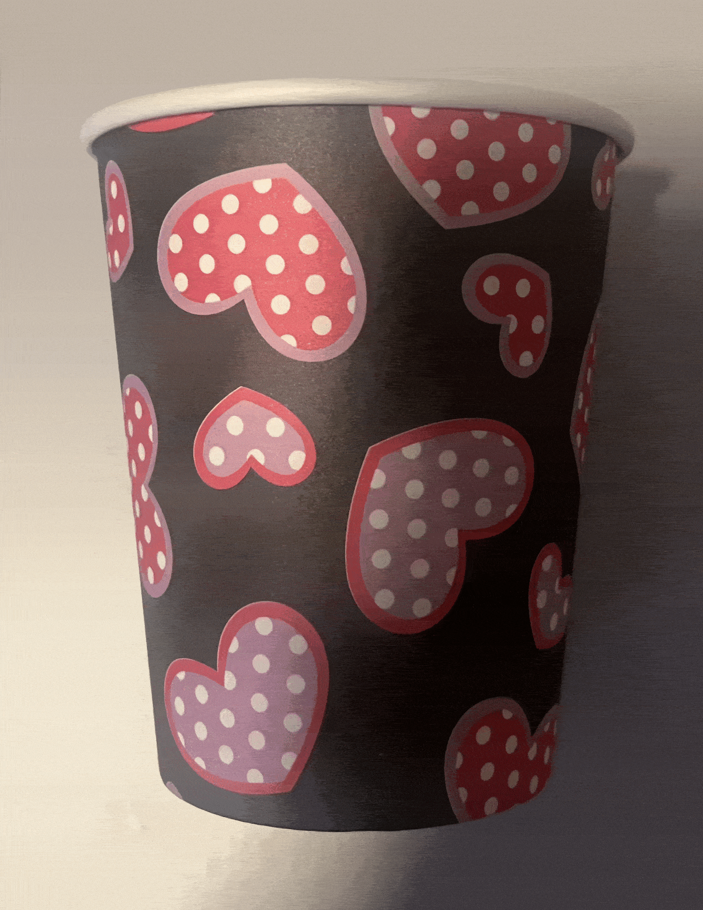

GIF Format Example

About This Image
This is a simple picture of a coffee cup. It has cartoon hearts with polka dots.
Why GIF Format?
The gif format works well for this image because of its simplicity and limited use of color.
Image source: Original photo by [Edward Makowski]